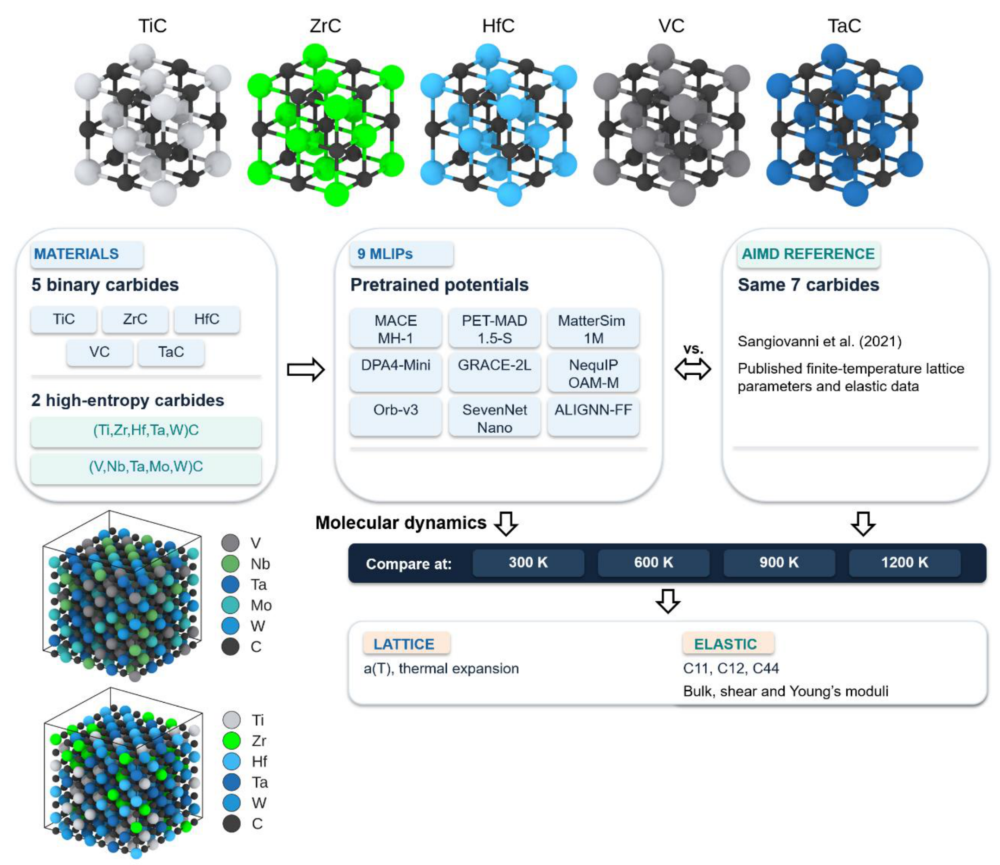
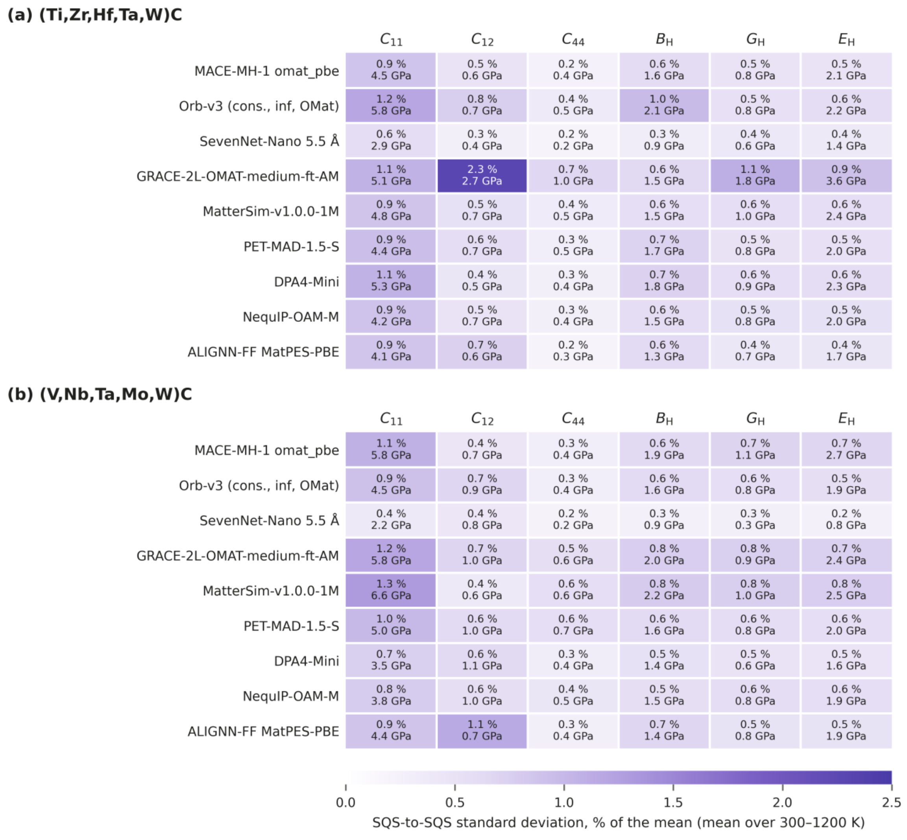
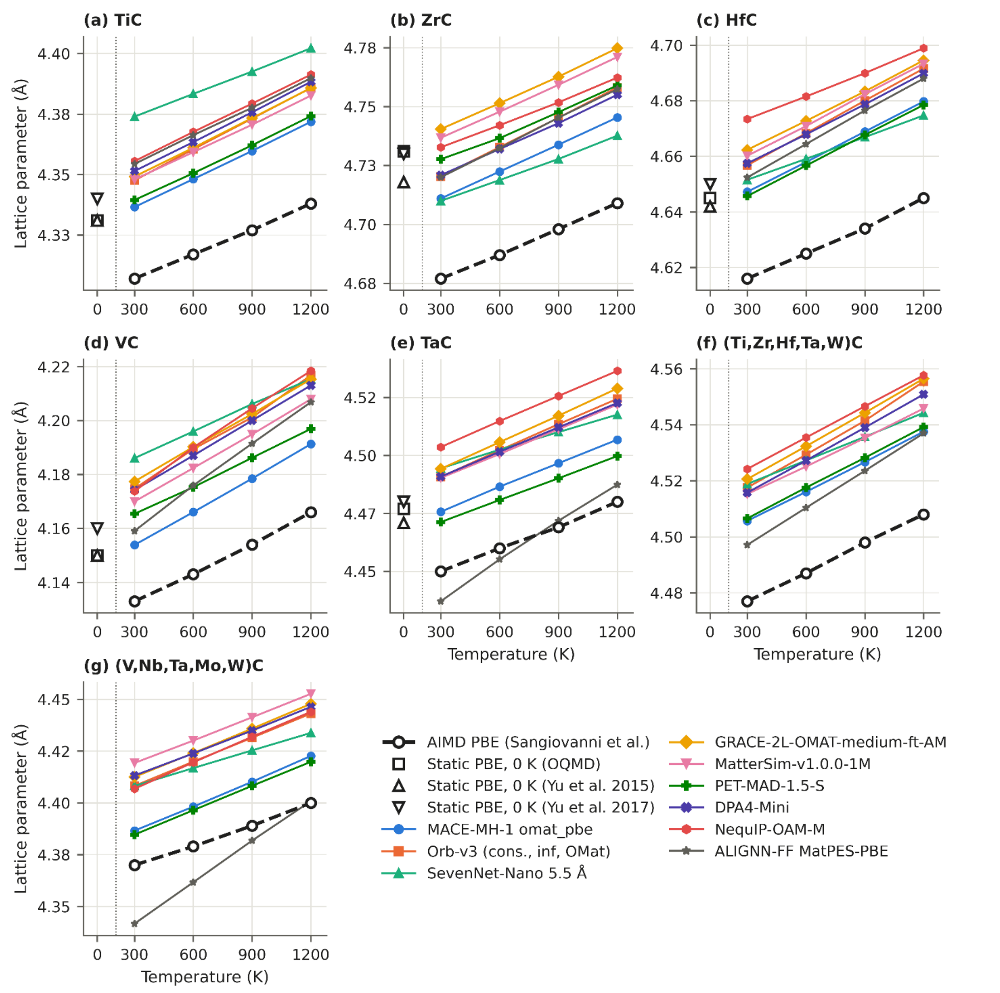
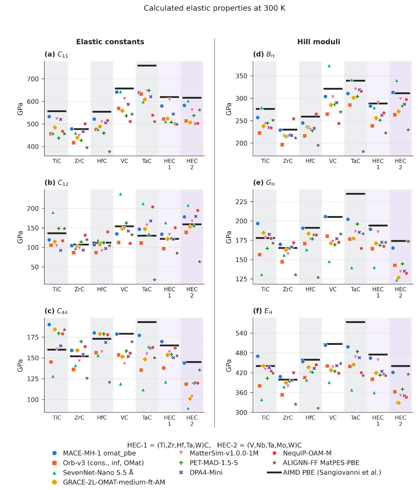
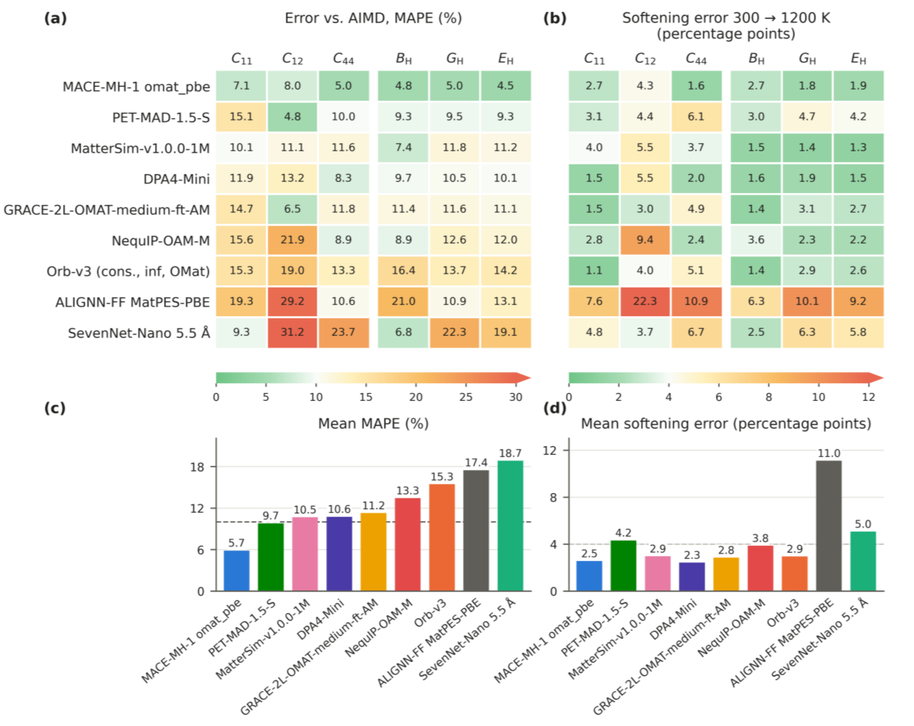
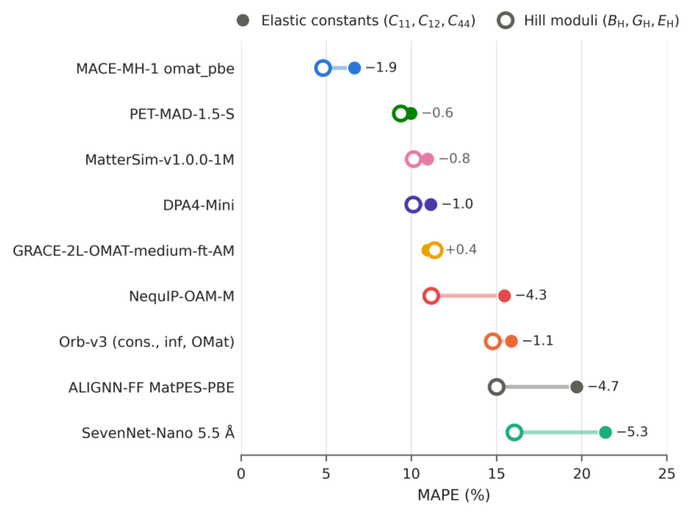
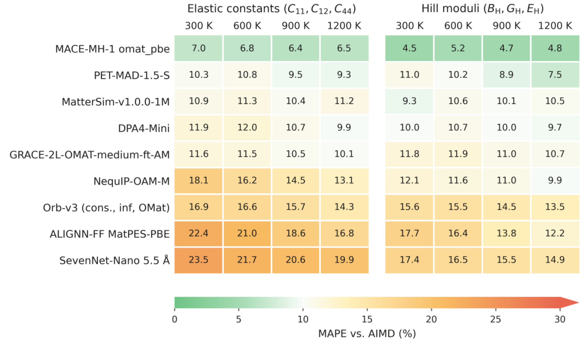
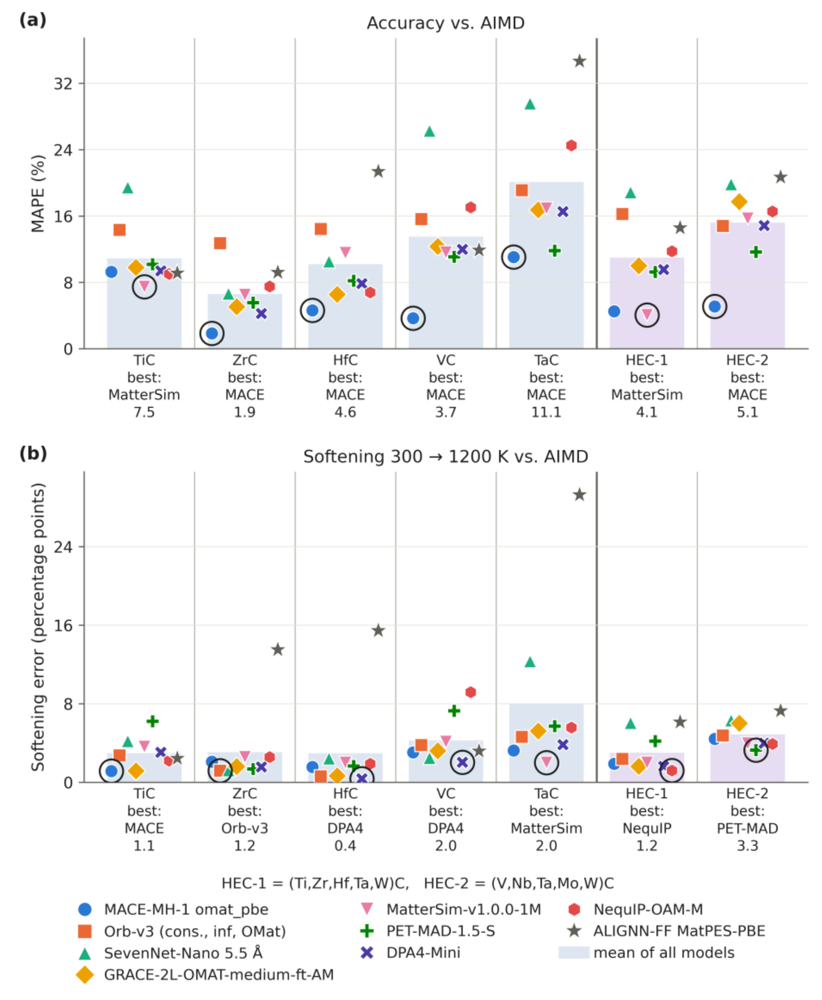
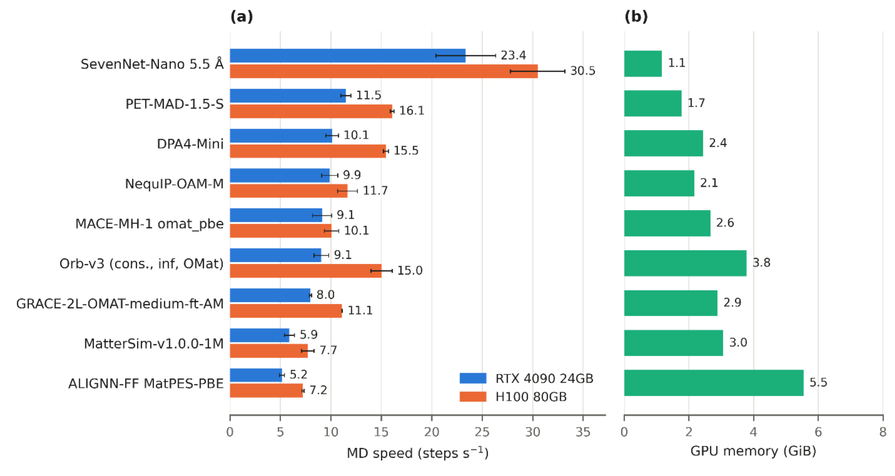

用通用原子势计算高温碳化物弹性：同时比较刚度与热软化
论文原文 ↗Miroslav Lebeda、Jan Drahokoupil、Šimon Svoboda、Petr Vlčák，Benchmarking Universal Machine-Learning Interatomic Potentials for Temperature-Dependent Elasticity of Binary and High-Entropy Refractory Carbides，arXiv，2026。官方页面｜原始 PDF
一块碳化物升到 1200 K 后，有多容易被压缩或剪切？高温弹性既受到热膨胀影响，也受到持续原子振动及非谐相互作用影响。第一性原理分子动力学可以直接采样这些响应，但要跨越多个组成、温度和应变，成本很高。
本文将九个公开预训练的通用原子势放进同一套应力—应变分子动力学流程，在 300–1200 K 比较五种二元和两种高熵碳化物。作者分别评价刚度的绝对数值和升温后的归一化软化，找出适合有限温度弹性计算的模型，并分析误差随组成的变化。
方法怎样做：让受应变晶体在温度下运动，再从平均应力求弹性
通用机器学习原子势从大规模电子结构数据学习原子种类、坐标与能量、力、应力之间的关系。作者直接使用 MACE-MH-1、PET-MAD-1.5-S、MatterSim、DPA4-Mini、GRACE、NequIP、Orb、SevenNet 和 ALIGNN 的公开模型，计算共同的碳化物结构。
五种二元材料是岩盐结构 TiC、ZrC、HfC、VC 和 TaC，均构建 512 原子周期超胞。两种高熵材料为近等摩尔的 (Ti,Zr,Hf,Ta,W)C 和 (V,Nb,Ta,Mo,W)C，碳占据一个子晶格，多种金属混合占据另一个子晶格。作者用特殊准随机结构 SQS 安排金属位置，使有限超胞内的原子对及三原子组统计接近随机混合，每种材料生成六份排列。
以 TiC 在 600 K 为例，首先运行恒温恒压模拟，让体积在零外压下调整，并取后段平均晶胞。随后施加沿 x 的拉伸/压缩及 yz 剪切，两类形变各取 −1%、−0.5%、+0.5%、+1%。每个受应变结构先平衡，再在恒温、固定晶胞下采样 50 ps。原子持续热运动，因此平均应力包含热振动和非谐响应。

原图 1｜七种碳化物经九个预训练势，在四个温度上计算晶格与弹性性质，再与一致的 AIMD 参考比较。
最后，将时间平均应力对应变做线性拟合，斜率给出弹性常数。立方近似下，C₁₁ 描述沿形变方向的响应，C₁₂ 描述横向耦合，C₄₄ 描述剪切；再通过 Voigt–Reuss–Hill 平均得到多晶体积模量、剪切模量和杨氏模量。该平均综合各晶粒应变一致与应力一致两种近似。
所有结果与同一项 AIMD 研究中七种材料、四个温度的数据对照。高熵材料先比较六份 SQS，弹性结果的相对标准差中位数约 0.6%，超过九成项目低于 1%，再将六份结果平均。

原图 2｜每格给出六份 SQS 结果的相对及绝对标准差，显示该流程下局部排列造成的波动水平。
主要结果：绝对准确度、温度趋势与金属组成共同决定表现
模型普遍低估刚度，平衡体积偏差提供解释线索
各原子势基本再现升温膨胀，平衡晶格常数普遍高于 AIMD，300 K 平均约高 0.9%。较大的体积通常伴随较低刚度，因此可能参与模型整体偏软的趋势。独立静态 PBE 晶格结果也帮助作者讨论不同参考计算之间的体积差别。

原图 3｜彩色曲线为原子势，黑色虚线为 AIMD，空心符号为独立静态 PBE 结果。曲线位置反映平衡体积差异，斜率反映热膨胀。
300 K 弹性比较中，多数模型的 C₁₁ 和杨氏模量低于参考，C₁₂ 的模型相关误差最大。不同分量对应不同形变方向，逐个比较可以显示模型对拉伸、横向耦合及剪切的不同描述能力。

原图 4｜黑线为 AIMD，彩色符号为各模型。左侧保留 C₁₁、C₁₂、C₄₄，右侧展示由它们组合的多晶模量。
刚度数值和热软化给出互补的模型排序
绝对准确度比较每个温度的性质值；热软化则比较相对 300 K 的变化。若一个模型在两温度间保持相近比例偏差，它的绝对刚度可以偏低，同时较好描述软化幅度。因此作者将二者分开评分。
MACE-MH-1 的总体平均绝对百分比误差最低，为 5.7%，各类弹性量的平均误差均低于 10%。热软化表现最好的 MACE-MH-1 和 DPA4-Mini，平均偏差分别为 2.5 和 2.3 个百分点。例如下降 10% 与下降 13% 的差别，是 3 个百分点，这个指标直接比较升温响应。

原图 5｜左侧评价性质数值，右侧评价 300–1200 K 的相对变化，下方分别汇总。两个任务的排名体现不同模型的强项。
Orb-v3 的绝对误差约 15.3%，软化偏差约 2.9 个百分点；PET-MAD-1.5-S 的绝对误差较低，约 9.7%，软化偏差则约 4.2 个百分点。对模型的选择因而取决于关心某温度下的具体刚度，还是随温度变化的幅度。
组合成多晶模量时，多个弹性常数的偏差可以部分抵消。SevenNet-Nano 的三个单晶常数平均误差约 21.4%，对应模量平均误差约 16.1%。作者也观察到部分模型误差随升温减小，并将其与初始偏软、随后软化不足的补偿联系起来。

原图 6｜实心圆为弹性常数误差，空心圆为模量误差。空心圆向左移动，显示组合平均中的误差抵消。

原图 7｜颜色比较 300–1200 K 的误差变化，与热软化评分共同说明各模型怎样跟随温度响应。
两种高熵碳化物与二元体系精度相当，组成差别更突出
两种高熵材料的九模型平均绝对误差约为 11.0% 和 15.2%，处于二元材料约 6.6%–20.1% 的范围。该比较显示，在所测高熵碳化物中，增加化学复杂度没有带来额外的准确度惩罚。
更明显的差异沿过渡金属组成出现。TiC、ZrC、HfC 相对容易，第 V 族金属碳化物尤其 TaC 更具挑战，剪切相关响应偏差突出。MACE-MH-1 在 TaC 的误差仍为 11.1%；富 Ti/Zr/Hf 的高熵材料则由 MatterSim 得到约 4.1% 的最佳误差。

原图 8｜上方为绝对误差，下方为软化偏差；柱为九模型平均，符号为单模型结果，圆圈标出材料内的最佳值。
对领域的贡献
这项研究将公开预训练势接到显式采样热运动的弹性流程，在一致参考下同时比较组成和温度。MACE-MH-1 的绝对准确度、MACE-MH-1 与 DPA4-Mini 的热软化表现，为碳化物有限温度计算提供了具体选项；C₁₂、TaC 和不同组成的误差则显示应优先关注的响应。
计算成本也被放入同一使用场景。512 原子 TiC 的动力学测试中，SevenNet-Nano 在 RTX 4090 上约 23.4 步/秒，MACE-MH-1 约 9.1 步/秒；模型显存约为 1.1–5.5 GiB。速度与弹性准确度一起，为实际模拟规模和任务选择提供依据。

原图 9｜左侧比较两种 GPU 上的动力学吞吐量，右侧为 H100 显存占用。结合弹性评分，可以选择适合任务的速度与精度组合。
论文最清楚的认识是：有限温度弹性需要同时理解平衡体积、单晶响应和温度软化。将绝对刚度与归一化软化分别评价，能够更准确地识别一个预训练模型实际提供的能力。
附：完整原始摘要中文翻译
准确预测随温度变化的弹性，对于评估高温条件下的难熔碳化物十分重要，但第一性原理分子动力学（AIMD）的计算成本限制了跨组成、跨温度的系统研究。通用机器学习原子间势（uMLIP）提供了一种高效替代方案，然而它们在这一任务上的准确度尚未得到充分确立。在这里，我们以一致的 AIMD 参考数据为基准，比较了九个 uMLIP 对五种二元和两种高熵碳化物在 300–1,200 K 范围内的预测。弹性常数及相应的体积、剪切和杨氏模量通过应力—应变分子动力学获得，显式采样原子的热运动及非谐效应，超出仅考虑热膨胀的范围。我们分别评估绝对弹性性质和归一化热软化。MACE-MH-1 获得最低的总体平均绝对百分比误差（5.7%）。MACE-MH-1 和 DPA4-Mini 最准确地再现热软化，平均偏差分别为 2.5 和 2.3 个百分点。所有模型总体上低估刚度，对多数模型而言，相比 AIMD 参考更大的平衡体积很可能参与形成这一趋势。C₁₂ 呈现最大的模型相关误差。高熵碳化物的预测准确度与二元碳化物相当，表明没有观察到化学复杂性带来的准确度惩罚。准确度反而随过渡金属组成变化，第 V 族金属碳化物，尤其 TaC，最具挑战性。这些结果确定了可用于碳化物有限温度弹性研究的有前景预训练模型，并说明为何必须独立评估绝对刚度准确度与热软化。